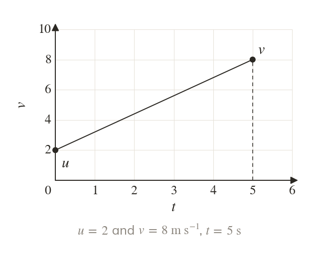
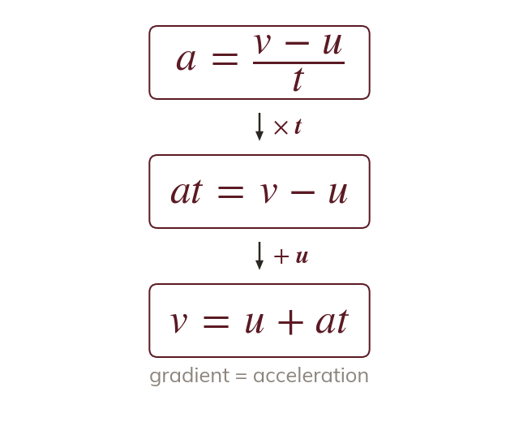
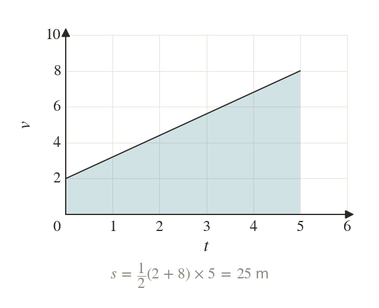
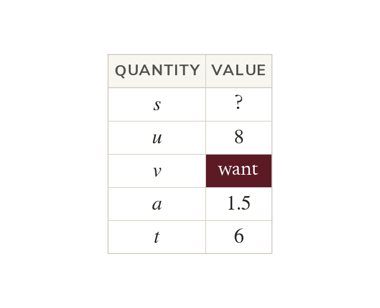
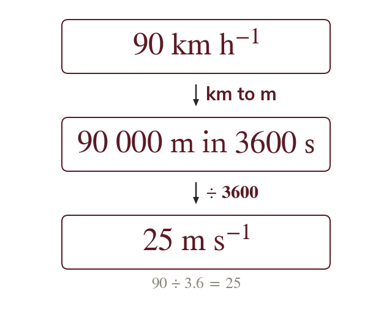
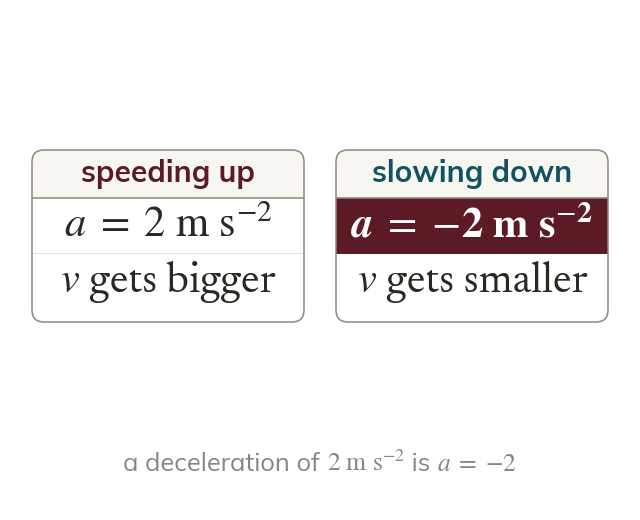

Five quantities, one graph
Constant acceleration problems link five quantities: the displacement the initial velocity the final velocity the acceleration a and the time A straight velocity-time graph from to over time shows all five.
With constant acceleration, one straight-line velocity-time graph gives two formulae that replace drawing the graph each time. The next lesson adds three more, so that any constant acceleration problem can be solved by choosing the right one.
Work down the page at your own pace. Write every answer in your book first, then click to check it.
Read each card, then follow the worked examples one step at a time.

Constant acceleration problems link five quantities: the displacement the initial velocity the final velocity the acceleration a and the time A straight velocity-time graph from to over time shows all five.

The gradient of the line is the acceleration, so . Rearranging gives

The area under the line is a trapezium with parallel sides and a distance apart. So the displacement is
Pick an answer. If it's wrong, the feedback tells you which mistake it was.
Read each card, then follow the worked examples one step at a time.

Write down the values of u, v, a and t that you know, and the one you want. Choose the formula that holds exactly the letters on your list.

Every value must be in metres and seconds before it goes into a formula. A speed in becomes m by dividing by

Take the direction of motion as positive. A body that is slowing down then has a negative acceleration.
Pick an answer. If it's wrong, the feedback tells you which mistake it was.
Finished? Next lesson: M9.4 Constant Acceleration Formulae 2.
For each skill, tap the one that is true for you today. Your Revise pages start with anything you mark Not yet.
Your ratings are saved on this device only.
Log in, then search for a code to practise that skill.